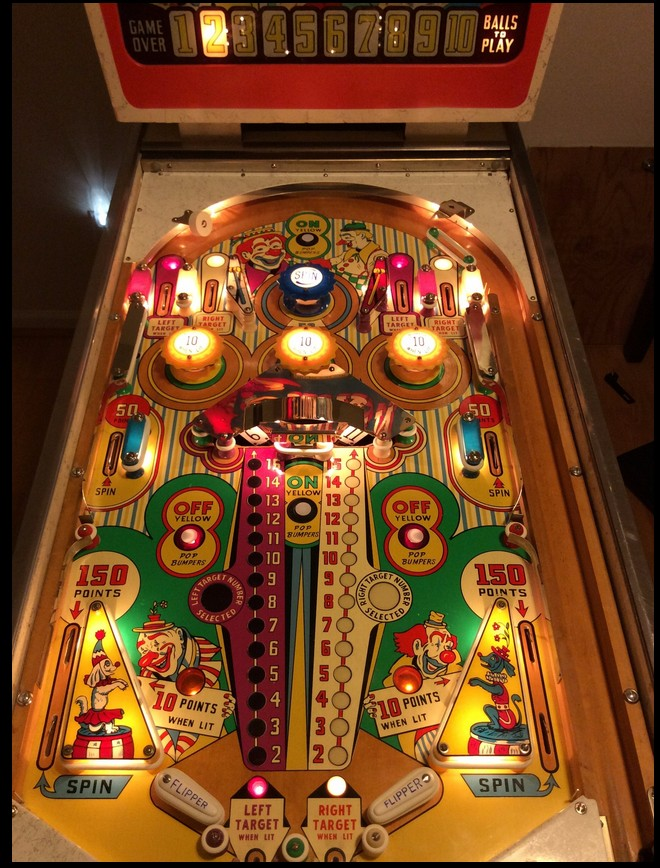

There are three pairs of red and white rollover lanes: one in the upper left, one in the upper right, and one between the flippers. In each pair, the left lane is lit red and the right lane is lit white. The meters in the center of the playfield indicate whether or not a left/red or right/white number has been selected. If no left number has been selected, making any lit red rollover lane or hitting the left panel of the center roto-target will select whatever number is shown on the left roto-target, which can be anywhere from 2 to 15, and scores 10 points times that displayed number. Making a lit white rollover lane or hitting the right roto-target panel will select a number on the right, similarly. Making a lane or hitting a rollover panel that corresponds to a side (left or right) who already has a number selected always scores 10 points. Selecting both a left number and a right number will reset the selections, and if the selected right number is strictly greater than the selected left number, 1 extra ball is scored. The selections also automatically reset if 15 is selected as the left number, since it is impossible for the right number to be greater.
The blue pop bumper and upper side lanes score 50 points and spin the roto-target. The out lanes score 150 points (scored as 100 + 50 across two separate switches) and also spin the roto-target.
Yellow pop bumpers and slingshots score 1 point, or 10 points when lit. The On Yellow Pop Bumpers rollover buttons at the top of the game and in front of the center of the roto-target turn on all three pop bumpers and both slingshots; the Off Yellow Pop Bumpers buttons directly above the slingshots unlight all yellow pops and slings.
Use the large posts that form the two center out lanes wisely when nudging a ball at the bottom of the table. The flippers are quite far apart, but these posts make balls much more saveable than you might expect.
Multiple extra balls can be earned per ball in play. There is a maximum of 10 balls remaining (including the ball in play) at any given time. A tilt disqualifies the ball in play and subtracts one further ball, but does not end the whole game.
The below picture of Flipper Clown's playfield was taken from Pinside, image #602209.

On some copies of Flipper Clown, the left and right target are instead referred to as "Number to Beat" and "Player's Number" respectively, and the number 15 is instead indicated by a clown's face on the roto-target and the playfield. Despite the different terminology, the game rules are the same.